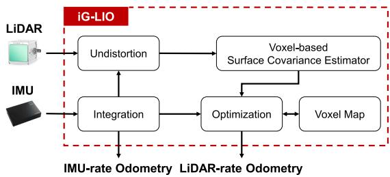
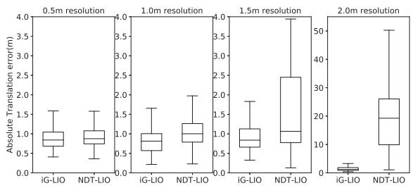

阶段 D · 激光主干 / Lesson 0087
iG-LIO 与 LOG-LIO（2024）：分布配准与实时法向
两篇同年的论文，在问同一件事：除了「点到面」，还有没有更稳的度量方式？法向又该怎么实时算出来？ 🧭
🎯 主题：GICP 分布配准 · MAP 紧耦合 · Ring FALS 法向 · 分层关联
👥 作者：iG-LIO — Zijie Chen、Yong Xu、Shenghai Yuan、Lihua Xie（NTU）／ LOG-LIO — Kai Huang、Junqiao Zhao、Zhongyang Zhu、Chen Ye、Tiantian Feng（同济 TIEV）
📅 2024 · iG-LIO: An Incremental GICP-Based Tightly-Coupled LiDAR-Inertial Odometry ／ LOG-LIO: A LiDAR-Inertial Odometry With Efficient Local Geometric Information Estimation
本节目标
读完你应该能：说清「点到面」与「分布到分布」的差别，以及后者为什么对噪声和部分重叠更宽容；说出 iG-LIO 的 iG 是什么、它把 GICP 与惯性约束统一在哪个框架里；说出 LOG-LIO 的 LOG 是什么、Ring FALS 凭什么快；最后能用一张表把两篇并排比较。
和前面课程怎么接
这是偿还第二季两笔旧账 的一课：0023 课（PCL）里我们第一次见到 ICP / GICP / NDT 三个名字，那时只是「工具箱里有什么」；本篇讲的是有人把 GICP 真正做进了实时 LIO。而 0022 课（点云 BA）的主线「点到面残差」，正是这两篇要超越的那个基准。往前接 0084 （ikd-Tree）、0085 （体素哈希），本篇两篇的地图结构都从这条线上长出来。
1. 两篇在问同一件事
我们先不急着进正文，先把这两篇并排放好。它们同一年发表，都在解决 LIO 前端配准层的两个基础问题：
问题一：残差怎么度量？
LOAM 系用的是「点到线 / 点到面」——把一个点配到一条线或一个平面上，算它的垂直距离。这在结构化环境里非常好用。但它是「点对几何基元」 的关系：只用到了「这个点离那个面多远」，没有用到这一小块点云长什么形状 。
iG-LIO 的答案： 用 GICP 的分布到分布 度量，让两个「小椭球」对齐。
问题二：几何量怎么实时拿到？
点到面残差里那个「面」是怎么来的？靠一个点的邻居点拟合出来——而这里要用到法向 。法向估计看起来只是个小工具，但它要么靠邻域搜索（贵），要么靠图像插值（也贵），在每秒几万点的 LIO 里就成了瓶颈。
LOG-LIO 的答案： 利用激光雷达的 ring 结构 预建查表，把法向估计做成近 $O(1)$；并把「分布」也做成实时维护的一等公民。
请注意这两件事其实是一体两面 ：法向与分布都属于「局部几何信息 」（local geometric information，LOG-LIO 的标题就是这么来的）。点到面残差的前提，是你得先知道那块面在哪、朝哪边；而分布到分布残差的前提，是你得先知道每个点周围那一小块点云的形状 。所以这两篇其实是在同一块地基上各搭了一层。
这一课的组织方式
按「组课」的写法：① 先立这个统一的问题框架（就是上面这一节）；② 下两节给 iG-LIO 的一句话招式 与它的机制；③ 再两节给 LOG-LIO 的；④ 然后用一张对比表当主干 ；⑤ 最后给一句我们的判断 ——并注明那是判断，不是原文的自评。

原图注（Fig. 2）： Block diagram of iG-LIO, it receives LiDAR and IMU measurements and outputs IMU-rate odometry and LiDAR-rate odometry.怎么看这张图： ① 顺着数据流看下去，原文把流程写得很清楚——先用 IMU 积分做运动补偿、同时产生「先验约束」，然后用体素化表面协方差估计器（VSCE）为去畸变后的扫描估计每个点的表面协方差 ，接着通过哈希索引在体素地图里做最近邻搜索、构造 GICP 约束，最后把先验与 GICP 两类约束一起送进 MAP 求解；② 注意它输出两种频率 的里程计（IMU 速率与激光雷达速率），这是 LIO 系统的标配写法；③ 这张图最好和上一课 0086 的 Point-LIO 框图、以及 0084 的 FAST-LIO2 框图对照着看——三者的骨架相似，差别在于「残差怎么算」与「地图怎么存」。
2. iG-LIO：iG 指的是什么
先把名字说清楚。iG-LIO 里的「iG」= incremental GICP，也就是「增量式的 GICP」。 这个「增量」不是随便加的前缀——它指的是这篇论文里两个关键的「增量」设计：用增量体素地图 来表示周围环境的概率模型，以及在这个体素地图上增量地 维护每个体素的分布（均值与协方差）。
作者来自新加坡南洋理工大学（NTU）：Zijie Chen、Yong Xu、Shenghai Yuan、Lihua Xie ——注意不是 FAST-LIO / Point-LIO 那个港大团队，所以这一篇是另一条线上的工作。
它想解决什么
原文把困难列得很清楚，一共三条：
GICP 此前多用在松耦合或扫描对扫描（scan-to-scan）的场合 ，还没有被真正嵌进一个高效又准确的 LIO 里。原文还举了 VGICP 作为参照：它把体素化的最近邻搜索引进 GICP，能在 CPU 上以 30 Hz 处理 15000 个激光点——很快，但仍然是「把 GICP 当配准器用」，而不是与惯性约束紧耦合。k-d 树找最近邻的复杂度是 $O(m\log n)$ （$n$ 是局部地图里的点数、$m$ 是维度）。原文说，当激光点数量很大时，这个搜索很难实时。这正是 0084 课里 ikd-Tree 要解决的问题的延续——只不过这次大家转而投向体素 。表面协方差估计对稀疏、小视场的扫描不适用。 当扫描里点与点离得很远时（比如固态雷达 100 Hz 采样、或者室内近距离环境），估计出来的协方差很不准，配准精度就跟着掉。
统一框架：把 GICP 与惯性约束放进一个 MAP
这是 iG-LIO 在结构上最重要的一步。它没有走「先让 GICP 配准出一个结果、再用 IMU 修正」的松耦合路子，而是把两类约束当成同一个估计问题里的两项：
这个式子在数学上就是最大后验估计 （MAP, Maximum A Posteriori）：在「IMU 告诉我大概在哪」这个先验之下，找那个让激光配准残差最小的状态。原文特别强调：这个 MAP 只维护单个时刻的状态 ，所以它就等价于把 IMU 测量与 GICP 配准紧耦合在一起 。
紧耦合的好处在哪里？原文的解释值得逐字读一遍：在退化场景 下（比如 100 Hz 采样时），MAP 里那些不可观的状态会被 IMU 约束住 ，而不会像松耦合那样——「只把 IMU 当初值、然后做纯 GICP 配准」——收敛到一个很差的解上。
这句「不可观的状态被 IMU 约束住」，正是第一季 0006 课（退化）与 0009 课（DARPA 地下挑战赛的实战失败）讲过的那个老问题的又一个解法。退化的本质不是「点太少」，而是「某个方向上几何信息消失了」 ；iG-LIO 的回答是：那个方向上让 IMU 顶上。
状态本身很朴素，就是 $\mathbf{x}=[\mathbf{R}_b^w,\ \mathbf{t}_b^w,\ \mathbf{v}_b^w,\ \mathbf{b}_\alpha,\ \mathbf{b}_g]$——姿态、位置、速度、加速度计偏置、陀螺仪偏置。注意这里没有外参 （雷达与 IMU 之间的相对位姿），这点在后面和 LOG-LIO 对比时会有用。
3. 分布到分布：和点到面差在哪
现在讲清楚这一课最核心的那个概念差别。它其实可以用两句话概括，但要看图才真正明白。
先说点到面 （也就是 0022 课那条主线、LOAM 系与 FAST-LIO2 都在用）：每个激光点要被配到一块局部平面上去，残差就是这个点到平面的垂直距离 。它只需要知道「那块面在哪、朝哪边」——也就是一个法向和一个平面上的点。
再说分布到分布 （GICP 的路子）：每个点不再只是一个位置，而被表示成一个小小的椭球 ——一个均值加上一个协方差矩阵。这个椭球在说什么？它在说「我所在的这一小块局部面，长什么形状 」：如果这块地方是平的，椭球就会被压成一个薄饼（一个方向很短、另两个方向长）；如果这块地方乱糟糟的，椭球就比较圆。
配准的目标，也就从「让点到面的距离小」变成了「让两个椭球对齐 」。
点到面 vs 分布到分布：用多少信息去对齐
左：点到面
点到这个面的垂直距离
残差 = 点到平面的垂直距离
只需要：一个点 + 一个面
右：分布到分布
来自当前帧
来自地图
两个「分布」之间对齐
用到了局部形状，比单点更稳
GICP 用的是点云局部协方差的形状，所以对噪声与部分重叠更宽容
这张图在画什么： 左边是「点到面」的几何关系，右边是「分布到分布」的几何关系。两边都在回答同一个问题——当前帧的一个点，该怎么和地图对齐。怎么看这张图： ① 左边只画了两样东西：一个红点 和一块蓝色的平面 ，中间那段红色虚线就是残差（点到面的垂直距离），所以它用到的信息量其实很小；② 右边画的是两个椭圆 ——蓝色的来自当前帧、绿色的来自地图，每个椭圆代表「这一小块点云的均值与形状」，中间那根双向箭头表示「让这两个分布对齐」；③ 关键差别在椭圆的形状 上：GICP 会先把协方差里最小的那个特征值压得很小（原文 Eq. 9，$\boldsymbol{\Sigma}=\mathbf{U}\,\mathrm{diag}(1,1,\epsilon)\,\mathbf{V}^{\top}$，$\epsilon=0.001$），让每个椭球都变成一个「薄饼」——薄饼的朝向就是这一小块面的朝向 。于是「对齐两个薄饼」天然就带上了方向信息。要记住的一句话： 点到面只用「一个点 + 一个面」，分布到分布用的是「两个小椭球的中心 + 形状 」；后者信息更多，所以在噪声大、点云稀疏、两边只部分重叠的时候更不容易被带偏。
GICP 残差长什么样
把上面那张图写成公式，就是 iG-LIO 实际使用的一对式子：
第一个式子看着眼熟——它就是「把当前帧的这个点变换到世界系，然后减去地图体素的中心位置」，也就是两个中心之间的差。第二个式子是信息矩阵 （协方差矩阵的逆），它把两边的协方差加了进来：$\mathcal{M}[j].\Sigma$ 是地图体素的分布，$\Sigma_i$ 是当前帧这个点的分布。
这个信息矩阵的物理含义非常直观： 如果某个方向上两块点云都很「不确定」（协方差大），那么在这个方向上，「中心差多少」这件事就不该被太当真——信息矩阵自动把它压小。这就是「对噪声更宽容」这句话在数学上的样子。
协方差从哪来：VSCE 与它的退路
GICP 原本的做法是：为每个点找最近的 20 个邻居点，用它们算协方差。iG-LIO 换成了一种更适合体素结构的做法——体素化表面协方差估计器（VSCE, Voxel-based Surface Covariance Estimator） ：用某点所在的 26 个相邻体素里的点来估计它的协方差 ，而不是去找 20 个最近点。
这个改动的巧妙之处在于：体素网格滤波器本来就要做降采样，VSCE 顺手把降采样和协方差估计合并成了一步 。原文说，这样做在稀疏、小视场的扫描上效果更好（这也正是它想解决的第三个困难）。
但也要说清楚它的退路：原文承认，当最近点数少于 5 个时，VSCE 算不出稳定的表面协方差 。这时 iG-LIO 的处理方式是——把对应的 $\Sigma_i$ 直接置为 $\mathbf{0}$，于是公式自动从面对平（plane-to-plane）退化回点到面（point-to-plane） 。原文说这个修改是必要的 ，而不是意外。
换句话说：iG-LIO 的方法在几何信息足够时用分布配准，不够时自动退回经典的点到面 。这是一个很务实的设计，也解释了为什么它能在同一套参数下跨这么多数据集跑。
另外还有一道保险：iG-LIO 用卡方检验 （chi-squared test）剔除离群点——包括「不合适的局部平面近似」和「匹配错误的对应关系」。这和第二季 0019 课讲的鲁棒核是同一族思路（都是「不信任坏数据」），只是手段从「降权」换成了「剔除」。
互动判断
「分布到分布」比「点到面」用了更多信息。多出来的那部分信息，具体是什么？
它一次用了更多的激光点
每个点携带的局部形状信息
IMU 测出来的运动信息

原图注（Fig. 5）： Box plots show the translation errors at different resolutions. The translation error of NDT-LIO increases rapidly with larger resolution size. At a resolution of 2.0 m, the median error of iG-LIO and NDT-LIO are 1.16 m and 19.25 m.怎么看这张图： ① 箱线图的横轴是体素分辨率 ，纵轴是平移误差 ——这是一张「参数敏感性」测试：把分辨率一路调粗，看谁先崩；② 请找那两条走势完全相反的曲线：NDT-LIO 随分辨率变大而急剧恶化 （到 2.0 m 时中位误差 19.25 m，基本等于失效），而 iG-LIO 的中位误差仍停在 1.16 m ；③ 这张图想说明的是：GICP 这一族度量（原文的消融里还对比了 NDT 与 VGICP）在分辨率这种「工程参数」变得不利时，比基于网格概率的 NDT 更稳。注意横轴分辨率变粗本身也会改变可用的点数，所以这不是纯算法比较，而更接近「同一套系统在参数不确定时谁更扛」。
4. LOG-LIO：法向怎么实时算出来
先说名字。LOG-LIO 里的「LOG」= LOcal Geometric information，也就是「局部几何信息」 ——具体指两样东西：点的法向 （normal）和点的分布 （distribution）。
作者来自同济大学 TIEV 实验室：Kai Huang、Junqiao Zhao、Zhongyang Zhu、Chen Ye、Tiantian Feng 。
为什么「实时算法向」是件难事
这件事的难度常常被低估，因为在学校里用法向太容易了：调一个库函数，传进去一个点云和一个搜索半径，它就还你一堆法向。我们第一次见它是在第二季 0023 课（PCL），当时它只是一个可选步骤。
但在 LIO 里，这个步骤会变成一个真实的瓶颈。原文的说法是：准确估计局部几何信息需要在稠密点云里检索邻域信息 ，而对 LIO 系统来说，这会带来巨大的计算负担 ——即使有 k-d 树或体素地图帮忙也一样。
传统做法是最小二乘：取一个点的邻域点，算它们的协方差矩阵，再做特征分解，最小特征值对应的特征向量就是法向 。这套流程对每一个点都要做一遍——几十万个点，每个点都要搜邻域、算矩阵、做分解。
Ring FALS：把「搜邻域」这一步彻底绕开
LOG-LIO 的突破口是：激光雷达的扫描是有结构的 。旋转式激光雷达的每一圈（ring）都在固定的俯仰角上，同一圈内的点按方位角均匀排开。既然位置是「规整格子」上的，那就不需要到三维空间里去搜邻居了 ——「上下左右」的邻居是谁，从扫描结构里直接就能查出来。
具体做法（原文叫 Ring FALS ，由已有的 FALS 方法改造而来）：预先建一张查找表 ，表的行数等于 ring 数，列数等于每圈里的点数，表里存的是每个点的结构性信息 （方向向量）。等新的一帧扫描到来，只要拿到每个点的距离读数 ，就能直接从表里查到它的邻居、进而算出法向——不需要插值，也不需要邻域搜索 。
为什么「不需要插值」是个关键卖点
原文在讲 FALS 时指出：FALS 是把扫描点投影到球面距离像 （SRI）上再做计算，而这就要求距离像里的每个像素都有测量值 ——可激光点只占其中稀疏的一部分像素，所以必须做插值，而插值本身就很耗时。
Ring FALS 换了个思路：查找表完全由实际拿到的测量构成 ，行是 ring、列是每圈内的点，因此天然没有空像素，也就没有插值 。这一步简化正是它快起来的原因。
法向是怎么算出来的：一小块点「朝哪边」
小圆点 = 一小块邻域点
墙
地面
① 墙面法向
垂直于墙面
② 地面法向
垂直向上
③ 棱上：法向乱跳，不能用
法向＝这一小块点「朝哪边」；它是点到面残差的前提
这张图在画什么： 一个真实的墙角与地面交界处。在三个不同的位置各取一小块邻域点，看它们各自拟合出来的法向指向哪里。怎么看这张图： ① 中间那两条灰色带子分别是墙 （竖直）和地面 （水平），它们在右下角相交成一条棱；② ①号位置在墙上，那一小块点拟合出的法向垂直于墙面 （向右）；②号位置在地面上，法向垂直向上 ——这两个法向都很稳定、很可靠；③ ③号位置正好落在墙角那条棱上 ，同样的邻域起点却可以拟合出好几个完全不同的方向（图上画了三根红箭头），这说明棱上的法向是不稳定的、不可信的 。LOG-LIO 的原文也承认这一点：在墙角、遮挡、距离读数缺失的地方，Ring FALS 的假设不成立，它靠的是「把背向的法向翻转、再做中值模糊平滑、最后用可见性与一致性检查把剩下的坏点剔掉」。要记住的一句话： 法向不是「点云自带的一个属性」，而是从一小块邻域里拟合出来的一个估计 ——邻域选得好不好，决定了这个估计能不能用。
当然，快只是第一步。Ring FALS 给出的法向还有一个「和地图对不上」的风险，所以 LOG-LIO 还做了两件事：
把「分布」也做成实时维护的
它把 0084 课里的 ikd-Tree 扩展成按体素组织地图 ，并在每个体素里增量地 更新点的分布——同时保证这个分布与法向估计保持一致。原文用到的分布合并式子是：$\mathbf{M}=\mathbf{S}_n+\mathbf{S}_m-\frac{1}{n+m}(\mathbf{P}_n+\mathbf{P}_m)(\cdot)^{\top}$（把两团点合并成一团时，求和项与平方和项各自相加再减掉均值修正项）。
另外，为了在「耗时」与「表示是否正确」之间取得平衡，原文的做法是：一旦某个体素的分布收敛了，就把它固定下来 （fix），不再反复更新。
分层关联：surfel 优先于点面，大优先于小
有了分布，就能判断一个体素里的点是不是构成一块像样的面元（surfel） 。原文给的判据是两个比值：$\rho_i=\dfrac{2(\lambda_2-\lambda_1)}{\lambda_1+\lambda_2+\lambda_3}>1.0$ 与 $\gamma_i=\dfrac{\lambda_2}{\lambda_1}>100$（$\lambda_1<\lambda_2<\lambda_3$ 是协方差矩阵的特征值）。$\rho$ 越大说明这团点越「平」，$\gamma$ 越大说明越不像「线状」。
关联时顺序是：点到面元（point-to-surfel）优先于点到面（point-to-plane），大尺度面元优先于小尺度面元 。原文的理由是：大尺度面元由更多的点合并而来，对噪声更不敏感。而且这个「大面元」是可以由多个小面元合并 出来的（合并后仍需满足上面的判据）。
所以 LOG-LIO 的整体结构是：Ring FALS 估法向 → 扩展 ikd-Tree 增量维护体素分布 → 分层关联 → 用误差状态迭代卡尔曼滤波（iEKF）优化位姿 。它和 FAST-LIO2 一样是直接配准到地图、不做特征提取，差别在于它把法向与分布这两个「局部几何信息」变成了实时可得的一等公民，并用它们构造出比「面」更精细的「面元」 。
互动判断
Ring FALS 能比传统的「邻域搜索 + 最小二乘」快这么多，最根本的原因是什么？
它省掉了距离像的插值
它利用扫描自身的环状结构
它只对少数几个点算法向
原图注（Fig. 1）： Illustration of the LiDAR observation model and multi-scale surfel association. (a) The magenta line indicates the ray of the red point. The eight points are the neighborhoods that Ring FALS uses to estimate the normal of the red point. (b) The orange ellipses represent the large-scale surfel merged by the five blue small-scale surfels.怎么看这张图： ① 先看 (a) ：从雷达到红点有一条射线，而用来估法向的邻居是它周围那 8 个点 ——这正是「利用扫描结构找邻居」的具体样子，邻居不是用三维距离搜出来的，而是从扫描的环状排布里直接给出的；② 再看 (b) ：五个蓝色小椭圆合并成了一个橙色大椭圆，这就是「大尺度面元」，它代表了更大一块表面的分布，对噪声更不敏感；③ 按原文的字母顺序推断 ，这张图的 (a) 在左侧、(b) 在右侧。把 (a) 与 (b) 连起来看，就是这一节的全部逻辑：先靠结构拿到法向，再把分布合并成面元，最后用面元去关联 。
原图注（Fig. 3）： Starting position of the sequence gate03 of M2DGR dataset. The white lines represent normalized normals from Ring FALS estimation.怎么看这张图： ① 这张图值得慢慢看，因为它是「法向估计到底靠不靠谱」最直观的体检报告——地面上几乎所有的点，白色法向都是竖直朝上的 ，这说明估计是对的；② 再看原文特别点出的两个盒子：黄框里的柱子 ，它的角点处的法向会平滑地过渡到相邻侧面的法向上——这是好现象；③ 绿框里的假边缘 附近，因为遮挡，点的邻域距离差异很大，Ring FALS 的假设不成立，法向就估错了；④ 但原文马上补了一句：这类估错法向的点在整帧里只占少数 ，会在后续的可见性与一致性检查（原文 Section V-B2）里被当作离群点剔除掉。这张图同时展示了方法的有效范围与失效边界。
5. 两篇并排看：一张对比表当主干
前面几节是分头讲的，这一节把两篇放回同一个画框里。请把这张表当作本课的主干来记——组课的读法就是「先有个统一框架，再看每个人在框架的哪一格上用力」。
iG-LIO（2024）
LOG-LIO（2024）
解决什么 让 GICP 的分布配准 第一次以紧耦合的方式进入实时 LIO；同时解决 k-d 树最近邻 $O(m\log n)$ 与稀疏／小视场扫描下协方差不准的问题
法向 与分布 这两个局部几何量的实时估计，以及它们的合理使用（分层关联）
核心机制 GICP 残差 + 惯性先验，一并放入 MAP 求解（高斯–牛顿）；VSCE 用 26 个邻域体素估协方差；协方差不足 5 个近邻时置 $\Sigma_i=\mathbf{0}$ 退化为点到面；卡方检验剔外点
Ring FALS ：预建 ring×方位查找表，只靠距离读数估法向，近 $O(1)$；把 ikd-Tree 扩展为按体素管理分布 并增量更新，收敛后固定；分层关联 （面元优先于点面、大面元优先于小面元）；iEKF 优化
与点到面残差的关系 替代它 ：默认用分布到分布；只有在协方差估不出来时才退回 点到面。原文给出实测的比例——平均有相当一部分点的关联用的是「面对平」度量augment（扩充）它 ：迭代卡尔曼滤波的 MAP 里在原来的点到面项之外，再加入点到面元项 ；点到面仍作为「体素不构成面元时」的兜底
地图结构 增量体素地图 ：体素坐标经哈希（大素数异或取模）索引，最近邻查询 $O(1)$ 并可并行；用 LRU 淘汰旧体素控制内存扩展的 ikd-Tree ：把 0084 课的 ikd-Tree 从「存点」升级为「按体素存分布」，保留原来的增量插入与重平衡能力
状态里有什么 姿态、位置、速度、加速度计偏置、陀螺仪偏置（不含雷达–IMU 外参 ）
姿态、位置、速度、陀螺仪偏置、加速度计偏置、重力 （同样不含外参）
原文承认的短板 原文没有专设局限小节 。可如实指出：①「面对平」只在协方差可估时成立，否则退化；② 在两个 100 Hz 的小视场序列（avia_2／avia_3）上，Faster-LIO 比它略快 ；③ 精度上与最好方法「可比」，并非全面最优
① 平均每帧 28.101 ms ，比 FAST-LIO2 的 20.523 ms 慢约 8 ms（多出的是 Ring FALS 与体素内分布维护）；② Ring FALS 的假设在墙角、遮挡、距离读数缺失 处不成立，靠法向翻转＋中值模糊＋可见性／一致性检查兜底；③ 它的查找表是按旋转式激光的 ring 结构 定义的，对固态非重复扫描是否适用，原文没有讨论
一帧的时间都花在哪（各段占比为示意）
一帧开始
一帧结束
预处理
Ring FALS 估法向
体素内分布维护
iEKF 优化
LOG-LIO 平均每帧 28.101 ms，FAST-LIO2 平均 20.523 ms，多出约 8 ms
多出来的主要来自法向估计与分布维护；各段占比为示意，原文未给出细分
这张图在画什么： 一帧的计算时间被切成几段的样子，用来说明「实时算法向」这笔账到底花在哪里。怎么看这张图： ① 整条横条代表一帧的总耗时，颜色不同的几段分别是预处理、法向估计、分布维护与最终的位姿优化；② 请重点看红色与橙色两段 ——它们对应 Ring FALS 的法向估计和体素内的分布维护，正是 LOG-LIO 相对 FAST-LIO2 多出来的那部分工作量；③ 各段的宽度比例是示意，不是原文给出的数字 ；能确定的是总量：原文 Table IV 里 LOG-LIO 的全部序列平均是 28.101 ms，FAST-LIO2 是 20.523 ms，差约 8 ms，原文把这 8 ms 归因于 Ring FALS 与体素内分布的增量维护。要记住的一句话： 「实时算法向」不是免费的——它换来的是一整套更精细的几何约束，代价是每帧多花大约 8 毫秒。
6. 数字与各自短板
iG-LIO 的效率
原文的做法是：把 iG-LIO 与三个当代 LIO（Faster-LIO、FAST-LIO2、DLIO）在同样的平台上跑同样的序列，比较每帧平均耗时 与有效特征点数／其中「面对平」度量所占比例 。原文里还有一个对照组 iG-LIO\* ——它沿用 iG-LIO 的框架，但协方差改回用 k-d 树做半径搜索来估计 ，用来验证 VSCE 的价值。
每帧耗时（ms，原文 Table II 节选）
iG-LIO
iG-LIO*
Faster-LIO
FastLIO2
nclt_1 8.524 13.716
10.070
22.536
avia_2 （100 Hz 小视场）0.869
1.250
0.650 0.901
avia_3 （100 Hz 小视场）0.930
1.257
0.690 1.164
原文的总评是：在其他数据集上，iG-LIO 比 Faster-LIO 快 1.2–1.5 倍 、比 FastLIO2 快 2.3–2.7 倍 、比 DLIO 快 1.5–3.5 倍 ；但在 avia_2 与 avia_3 这两个 100 Hz 的序列上，Faster-LIO 反而略快于 iG-LIO ——这一点原文自己如实写出来了，我们在表里也照实列出。这正是「短板」栏里第三条的来源。
至于精度，原文的措辞是 comparable accuracy （可比精度），而不是「最优」。举个例子：nclt_1 上 iG-LIO 是 1.673，Faster-LIO 1.855、FastLIO2 1.734、DLIO 2.104；但在 nclt_5 上 iG-LIO 是 0.956，而 FastLIO2 是 0.890——互有胜负 。原文最终的说法是：在所有序列保持同一套参数 的前提下，它拿到了与最好方法几乎相同的精度，但速度更快。
LOG-LIO 的两笔账
第一笔是法向估计的账。 这是它最漂亮的数字：
单帧法向估计耗时（ms，原文 Table I）
点数
Ring FALS
PCL（单线程）
PCL（OMP 10 线程）
Velodyne-32 57600
7.784 79.811
26.355
Ouster-16 16384
2.597 155.972
39.664
原文的总结是：在 M2DGR 上（每帧约 57600 点），Ring FALS 只花掉 PCL 大约十分之一的时间 ，比 PCL 的 OpenMP 并行版本还快约 4 倍。还有一个反直觉的细节值得注意：Ouster-16 每帧的点数比 Velodyne-32 少，但 PCL 花的时间反而更多 ——原文解释，这是 k-d 树邻域搜索的代价造成的，而且这个代价还会受环境空间结构的影响。这恰好说明：Ring FALS 快，不是因为「点少」，而是因为它跳过了搜索这件事。
第二笔是精度与总耗时的账。 原文在 M2DGR 与 NTU VIRAL 共 21 个序列上比较了三个系统：LOG-LIO、只用到点对面关联的消融版本 LOG-C、以及 FAST-LIO2。结果是：
平均 ATE（绝对轨迹误差）：LOG-LIO 0.330 m，LOG-C 0.379 m，FAST-LIO2 0.423 m。 原文说 LOG-LIO 在 21 个序列中拿下 10 个的最优 ，并且拿到了最低的平均误差。有意思的是 LOG-C 也已经略优于 FAST-LIO2 ——这说明「只换关联策略、不带分层」本身就有收益，而分层关联（面元优先、大尺度优先）又在此基础上继续改进。
原文也解释了差异出现的场合：在室内这类平面上很多的受限空间里，三者误差接近（因为点到面关联本身就能被很好地约束住）；真正的差别出现在 spms 这类「无人机飞出建筑群、升到高空、激光点变稀疏」的序列上——有限的点云重叠会让点到面关联出错，而 LOG-LIO 靠体素内准确的局部几何信息把这个误差压住了。
耗时代价： 正如上一张自绘图所示，LOG-LIO 每帧平均 28.101 ms，比 FAST-LIO2 的 20.523 ms 慢约 8 ms，原文说这仍然满足实时要求。
我们的判断（注意：这是判断，不是原文自评）
如果把这两篇放在「它们各自声称的新颖性」这个尺子上量：真正新的是「怎么把它做快」这一层，而不是度量本身。 GICP 是十几年前就有的东西（原文自己也是引用 [19]），法向估计更是一个古老的话题；两篇的贡献分别落在「用 26 个邻域体素代替 20 个最近点，把降采样与协方差估计合并」和「把环状结构做成查找表、绕掉邻域搜索与插值」上——这是工程与数据结构层面的贡献 ，而且是实打实的贡献，因为正是这两步让它们从「论文里的度量」变成了「能实时跑的系统」。
如果按「新问题」这个尺子量，两篇都偏增量 ：它们都在上一课 0084／0085／0086 铺好的那条路上（不提特征 + 增量地图 + 更精细的几何量），把「残差用什么度量」和「几何量从哪来」这两个螺丝各拧紧了一格。
课后练习
请用自己的话说清「点到面」与「分布到分布」在信息量 上的差别，并说明为什么后者对「部分重叠」更宽容。
展开查看答案
信息量的差别： 点到面只用两样东西——「这个点在哪」和「那块面在哪、朝哪边」（一个法向加一个平面上的点）。分布到分布则把每个点表示成一个带形状的小椭球 （均值 + 协方差），于是它不只携带位置，还携带「这一小块局部面的形状 」——是平的还是乱的、朝哪个方向压扁。
为什么对部分重叠更宽容： 在部分重叠的场景里，总会有些点的对应关系是模糊甚至错误的。点到面残差对这类错误很敏感：一个错配的点会给出一个不小的垂直距离，直接往优化里注入错误信息。而 GICP 的信息矩阵是两边的协方差之和的逆（原文 Eq. 10 的第二式），当某一块点云本身就很「不确定」或形状很「圆」时，这个方向上的残差会自动被压小 。原文对 GICP 的评价也是这个意思：表面协方差能让它减少错误对应带来的影响 。
另外要注意一点：iG-LIO 并不是「无脑用分布」。它的协方差估计在点数不足 5 个时根本不成立，这时会把 $\Sigma_i$ 置零，自动退化回点到面 。所以它的实际行为是「能用手法更精细的时候就用，用不了就退回经典做法」。
iG-LIO 说自己的优势之一是「在退化场景下把不可观的状态交给 IMU 约束住」。请解释这句话的含义，并说明它和第一季 0006 课里的「退化」是不是同一个概念。
展开查看答案
是同一个概念。 第一季 0006 课讲的「退化」，指的是在长走廊、隧道、开阔地这类环境里，几何约束在某个方向上消失了——比如一条长走廊里，只有两片平行的墙，激光雷达根本分不清自己「沿走廊方向」挪了多少。这时配准问题的信息矩阵在某些方向上特征值趋近于零，那个方向的解就不可观（unobservable），配准结果会沿那个方向乱飘。
iG-LIO 的处理方式： 它把「GICP 残差」与「IMU 先验残差」放在同一个 MAP 里一起解。GICP 那一项在几何信息缺失的方向上提供不了约束；而 IMU 那一项——因为它携带了加速度与角速度的积分信息——在这些方向上是有效的 。所以不可观的状态不会失控。
原文对松耦合的批评正好是这里的反面： 如果只是「用 IMU 给个初值，然后做纯 GICP 配准」，那么退化方向上 GICP 会把你收敛到一个很差的解上，而 IMU 的信息在这个过程中被丢掉了。原文说紧耦合模式改善了退化场景（例如 100 Hz 采样的激光雷达）下的鲁棒性与精度——注意这里提到 100 Hz，因为采样率越高、相邻帧之间的几何变化越小、退化越容易被触发。
LOG-LIO 的 Ring FALS 和传统的「邻域搜索 + 最小二乘」在流程上的根本区别是什么？为什么原文能用 Ouster-16 点数更少却更慢这个例子来说明它快的原因？
展开查看答案
流程上的根本区别： 传统做法是「先找到邻居，再算 」——给定一个点，要到三维空间（或用 k-d 树、体素）里去搜出它最近的若干个点，然后用这些点算协方差、做特征分解取最小特征向量。搜索本身就是要花钱的 ，而且树结构的搜索代价和地图的空间分布有关。
Ring FALS 是「查表取代搜索 」——它预先建一张行数为 ring 数、列数为每圈点数的查找表，把每个点的结构性信息（方向向量）存好。新扫描到来时，每个点在扫描结构中的「上下左右」邻居是谁是已知的 ，靠距离读数就能算出法向。既然不搜，就没有搜索的代价；也不需要像 FALS 那样在球面距离像上做空像素插值。
为什么 Ouster-16 的例子有说服力： Ouster-16 每帧只有 16384 点，比 Velodyne-32 的 57600 点少得多 。如果「快」只是「点少」的结果，那 Ouster-16 应该更快才对。但原文 Table I 显示，PCL 在 Ouster-16 上花的时间反而更长 （单线程 155.972 ms vs 79.811 ms）——原文把原因归到 k-d 树邻域搜索的耗时上，并指出它还受环境空间结构的影响。这就说明：慢的根源是「搜索」这个动作，而不是点的数量 ；而 Ring FALS 恰恰把搜索整个去掉了，所以它在两套数据上都稳定地快（2.597 ms 与 7.784 ms）。
LOG-LIO 在 21 个序列上的平均 ATE 优于 FAST-LIO2，但每帧耗时比它多约 8 毫秒。请说明这个取舍在什么场景下是划算的、在什么场景下不划算。
展开查看答案
划算的场景：稀疏、退化、大范围、结构不是那么规整的地方。 原文自己给了最好的线索：在室内这类平面上很多的受限空间里，三个系统（LOG-LIO、LOG-C、FAST-LIO2）的误差都差不多——因为到处是平面，点到面关联本来就能把位姿约束得很好，多花 8 ms 去买更精细的几何信息，收益不明显。而在 spms 这类「无人机飞出建筑群、升到高空、激光点变得稀疏、地图重叠有限」的序列里，点到面关联开始出错，而 LOG-LIO 靠体素内的局部几何信息把误差压住了。几何信息越稀缺，这 8 ms 花得越值。
不划算的场景：算力已经很紧张、且环境结构良好。 比如 0086 课里 Point-LIO 跑的那台机载计算机（DJI Manifold 2-C、1.8 GHz 四核），预算本来就紧；如果场景是结构规整的走廊或房间，点到面已经够用，那额外 8 ms 换来的精度提升可能不足以补偿。
另外要注意，这 8 ms 只是平均 值。原文说这个差异要结合「点数与环境复杂度」来看——在某些序列上差距会比 8 ms 大（例如 M2DGR 的 gate 序列上 LOG-LIO 是 46.563 ms、FAST-LIO2 是 31.378 ms）。所以真正做工程选型时，应该看你的目标序列 上的数字，而不是只看平均值。